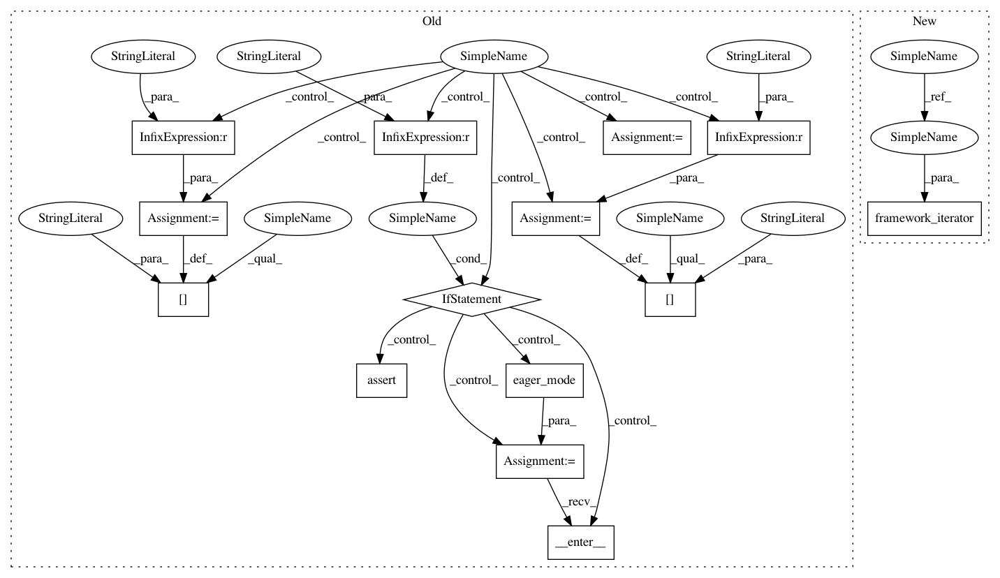

1d4823c0ec446e93d00df8ca654db4b45b63b3d4,rllib/agents/dqn/tests/test_dqn.py,TestDQN,test_dqn_exploration_and_soft_q_config,#TestDQN#,53
Before Change
print("framework={}".format(fw))
eager_mode_ctx = None
if fw == "tf":
assert not tf.executing_eagerly()
else:
eager_mode_ctx = eager_mode()
eager_mode_ctx.__enter__()
config["eager"] = fw == "eager"
config["use_pytorch"] = fw == "torch"
// Default EpsilonGreedy setup.
trainer = dqn.DQNTrainer(config=config, env="FrozenLake-v0")
// Setting explore=False should always return the same action.
After Change
def test_dqn_exploration_and_soft_q_config(self):
Tests, whether a DQN Agent outputs exploration/softmaxed actions.
config = dqn.DEFAULT_CONFIG.copy()
config["num_workers"] = 0 // Run locally.
config["env_config"] = {"is_slippery": False, "map_name": "4x4"}
obs = np.array(0)
// Test against all frameworks.
for _ in framework_iterator(config, ["tf", "eager"]):
// Default EpsilonGreedy setup.
trainer = dqn.DQNTrainer(config=config, env="FrozenLake-v0")
// Setting explore=False should always return the same action.
In pattern: SUPERPATTERN
Frequency: 3
Non-data size: 14
Instances
Project Name: ray-project/ray
Commit Name: 1d4823c0ec446e93d00df8ca654db4b45b63b3d4
Time: 2020-04-03
Author: sven@anyscale.io
File Name: rllib/agents/dqn/tests/test_dqn.py
Class Name: TestDQN
Method Name: test_dqn_exploration_and_soft_q_config
Project Name: ray-project/ray
Commit Name: 1d4823c0ec446e93d00df8ca654db4b45b63b3d4
Time: 2020-04-03
Author: sven@anyscale.io
File Name: rllib/utils/exploration/tests/test_explorations.py
Class Name:
Method Name: do_test_explorations
Project Name: ray-project/ray
Commit Name: 1d4823c0ec446e93d00df8ca654db4b45b63b3d4
Time: 2020-04-03
Author: sven@anyscale.io
File Name: rllib/policy/tests/test_compute_log_likelihoods.py
Class Name:
Method Name: do_test_log_likelihood
Project Name: ray-project/ray
Commit Name: 1d4823c0ec446e93d00df8ca654db4b45b63b3d4
Time: 2020-04-03
Author: sven@anyscale.io
File Name: rllib/agents/dqn/tests/test_dqn.py
Class Name: TestDQN
Method Name: test_dqn_exploration_and_soft_q_config